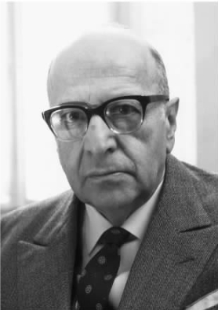
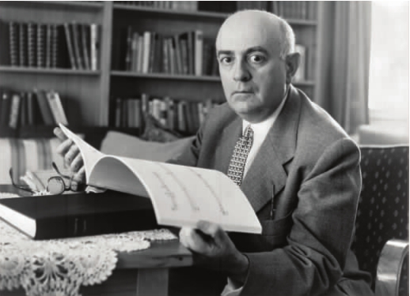

在英语国家，哈贝马斯为人熟稔的作品有《交往行为理论》、关于商谈伦理学的各类文章以及《在事实与规范之间》。笼统地讲，他的社会、道德和政治理论都已经在这些作品中得到了各自阐发。哈贝马斯还被视为法兰克福学派第二代理论家的领军人物，他的著作也应被看成是对法兰克福学派第一代理论家的批判理论进行不断反思的结晶。
二战之前和之后的一段时间，一群哲学家、社会学家、社会心理学家、文化批评家，在法兰克福由私人资助的社会研究院进行研究工作，这就是法兰克福“学派”的由来。这些思想者在学院一本名为《社会研究杂志》的期刊上发表文章，宽泛地说，他们遵从共同的学术范式：他们作同样的理论假设，提出类似的问题，都受到黑格尔（1770—1831）和卡尔·马克思（1818—1883）辨证哲学的影响。法兰克福学派学者所追随的当代德国辨证哲学的传统，有时又被称为黑格尔-马克思主义，在当时它远不是社会思潮的主流。作为知识分子中的少数派，他们同当时占支配地位的新康德主义欧洲传统和逻辑经验主义盎格鲁-奥地利传统针锋相对。后来人谈到所谓的法兰克福学派和法兰克福学派理论时，这个认识是不可少的。

图6 马克斯·霍克海默，社会研究院院长，摄于法兰克福
马克斯·霍克海默（1895—1973），法兰克福研究院名誉院长，对于1930年代“批判理论”范式的发展起到了主要作用。
在霍克海默看来，批判理论将成为新的跨学科理论活动，它补充并改造了黑格尔和马克思的辩证哲学，在其中注入了来自精神分析这一相对新生的学科，以及来自德国社会学、人类学与非主流哲学家如弗里德里希·尼采（1844—1900）、阿图尔·叔本华（1788—1860）的敏锐洞见。所以，批判理论的研究方法具有四个主要特点：跨学科性、反思性、辩证性和批判性。
法兰克福学派率先将多视角、多学科的方法同时运用于道德、宗教、科学、理性和合理性研究。他们认为，不同学科视角的交叉能够产生新的洞见，这样的见识在一个视阈狭隘、日趋专业化的学术领域内则无法获得。这样，他们便挑战了当时盛行的想当然的看法，即唯有自然科学的经验主义方法具有有效性。
与几乎包括了从数学、形式逻辑到自然科学的所有方面、霍克海默所谓的“传统理论”不同，批判理论具有反思特征，即内在的自我意识特征。批判理论反思其自身产生的社会背景，反思自身在社会中的作用，反思其实践者的意图和利益，等等。批判理论同这样的反思密不可分。
与跨学科性相结合，批判理论的反思特征有望揭开在法兰克福学派看来困扰着传统理论（比如自然科学）的“实证主义”幻象；也就是说，批判理论就是对于独立的事实王国的正确反映。
知识的二元图景加深了一种观点，即事实是固定的、给定的、无法更改的、独立于理论的。批判理论家摒弃了这种图景，支持更为黑格尔式、辨证的知识观。这种知识观认为，事实和我们的理论都是变动不居的历史进程的一部分，在这一进程中，我们看待世界的方式（理论地或实践地）和世界的存在方式之间是相互决定的。
最后，霍克海默认为批判理论应当具有批判性 。这一要求包含了几个明确的主张。总的来说，这一要求意味着理论的目标应该具有实践性，而不能是纯理论的；也就是说理论的目标不应该仅仅是正确的理解，还应该是创造出比现有社会条件和政治条件更有利于人类发展繁荣的局面。再具体一些，即理论应该有两种不同的规范性目标：诊断和治疗。理论的目的不仅限于为当代社会诊断病情 ，还应该通过指明社会进步的方面和发展的趋势，来为改造社会助一臂之力。
当纳粹主义盛行的政治氛围使得学派成员（他们几乎都是犹太血统）无法在法兰克福继续工作时，研究院不得不暂时迁址。先是移到了日内瓦，然后是美国。在美国，法兰克福学派直接遭遇了对他们来说闻所未闻的社会现象，一个深陷于福特式工业资本主义和大规模生产的消费社会。在美国，好莱坞的大制片公司、广播公司、出版公司已经实现了文化的工业化生产，这尤其让他们深感震惊。这些垄断巨头采用巧妙的操纵手段，使大众接受甚至支持一种隐藏在生活背后、干预乃至压制人们的基本兴趣的社会系统。例如，好莱坞制作的低成本商业电影，往往以俗套的大团圆结局为大众提供廉价的满足感。观看这样的电影，大众对阻碍他们追求真正幸福的社会制度不再批判，而是融入银幕偶像的虚构幸福。这样，文化便无意中充当了真实世界的广告。霍克海默和比他年轻的同事西奥多·W.阿多诺（1903—1969），称这类现象为“文化工业”。
文化工业是资本主义社会发展整体倾向的一个关键部分，这种倾向将创造、改变人们的需要与欲望，直至使他们真正欲求批量制造的垃圾，不再追求有价值的生活。分析这样的现象可以帮助我们理解，广告和其他形式的媒介如何操控主体的意识，制造出法兰克福学派所称的“虚假的和谐状态”。虚假的和谐之所以产生，乃在于人们认为社会具有理性、可以促进人类自由和幸福，并且社会无法改变，而实际上，社会是彻底非理性的，是人类追求自由和幸福的障碍，也是可以改变的。一百年前，在与当今社会状况迥异的普鲁士，黑格尔曾声称社会已经达到了真正的和谐，即在当时的社会和政治条件下理性的主体能够接受并赞同的状态，因为在权衡一切因素之后，理性主体最深层次的利益能够得到实现。而法兰克福学派，在马克思的影响下，基于他们在20世纪的经历，把黑格尔的乐观主义彻底颠覆。

图7 西奥多·阿多诺，音乐学家、社会理论家、哲学家。哈贝马斯在社会研究院的同事及导师。
1949年霍克海默回到了法兰克福，对于实现批判理论的实践目标——促成社会的巨大转变，他和阿多诺都更为悲观了。在两人合写的名著《启蒙辩证法》（1947年出版，1944年曾以《哲学断片》为名出版过油印本）一书的分析中，这种悲观主义已经得到了理论化。
阿多诺和霍克海默对启蒙的分析，为批判理论的后续发展确立了日程表。他们的理论始于黑格尔的假设（马克思也同意）：人类以精神和物质活动（或者如马克思所言，通过脑力或体力劳动）塑造或决定了他们身边的世界。然后他们加上了一条历史命题：到18世纪，工具理性，即对于完成既定目标或满足既定欲望的最有效方法的思考，已经成为主要的知识形式。启蒙的历史进程，赋予了自然科学和技术上可用的认知形式比其他知识形式更高的地位。阿多诺和霍克海默声称，自然科学对外部世界作出了可验证的归纳和预言，它是手段/目的推理的一种隐蔽形式。从人类学的角度来讲，科学不过是深化人类掌握和控制环境的根本需要的一种工具。技术和工业就是这种工具的延伸和应用。
阿多诺和霍克海默宣称，工业化和官僚化的现代世界形成于一种合理化进程中。20世纪的社会是人类活动的结果，而人类的理性能力已经退化，变成仅仅是对如何以最有效方式达成既定目标的一种计算。世界的日益数学化和客观化，造成了神话世界观和宗教世界观的终结。同时，人类赖以认识世界的概念又来自于特定的历史和社会环境。阿多诺和霍克海默认为，制度化的生活愈加受到科学和技术，即工具理性的形塑。社会性的各种现代形式（工具理性的制度化形式），依次引发了工具性概念、表现形式以及思考世界的方式：它们造成了一种科学的、计算的、实用的思想倾向。继之而来的便是工具理性地位的恶性螺旋式上升，它逐渐取得了独一无二的排他性地位。
科学和理性服务于人类操纵、控制外部世界的基础性需要——这样一个假设有其阴暗的一面，即承认支配和统治这两者与理性具有非常相近的同源关系。不仅是科学和技术，理性本身与支配就有牵连。在阿多诺和霍克海默看来，即使是原始的理性形式，例如魔法，也是人支配自然和他人的雏形。魔法师施法的目的就是要掌控自然界，由于手握魔法力量，他们便成为了社会中的统治阶级。
具有讽刺意味的是，根据卢梭、伏尔泰、狄德罗、康德等18世纪启蒙思想家的观点，启蒙运动就是要将人类从自然界解放出来并将人类引入自由与繁荣状态，现在看来，这一运动事与愿违。随着工业化和资本主义在19世纪的强盛，人类逐渐受到更为广泛的行政力量的约束和管制，逐渐受制于日益强大、难以驾驭的经济体系。启蒙不仅没有把人类从自然界解放出来，相反，它禁锢了作为自然之一部分的人。想要经济繁荣、物质丰富，得到的却是贫穷和苦难；想要道德进步，得到的却是向野蛮、暴力与褊狭的退化。这就是“启蒙辩证法”，它使霍克海默和阿多诺认识了他们所处的社会，并影响了他们对于那个社会的弊端的分析。
在年轻的哈贝马斯眼中，这种无法求证的悲观主义削弱了社会理论的批判指向。如果霍克海默和阿多诺对启蒙的解读是正确的，如果旨在带给人类自由和富足的启蒙自肇始就注定要把人类推入不自由和悲惨的境地，那么批判的社会理论就陷入了困境。社会理论自身就是一种启蒙形式，因此按照阿多诺和霍克海默对社会理论的广义理解，它就是一种可以帮助人们更好地认识社会、改良社会的理论。在这种情况下，正如阿多诺和霍克海默在《启蒙辩证法》一书序言中所承认的，启蒙既是必要的，又是不可能实现的。之所以必要，是因为若没有启蒙，人类就会继续滑向自我毁灭与不自由；之所以不可能实现，是因为启蒙的实现有赖于人类的理性活动，而理性又恰恰是问题之所在。这样一个疑难（aporia），使得霍克海默和阿多诺在论及批判理论的现实政治目标时更加慎重。（aporia是一个希腊词，字面上的意思是“无路可通”，喻指“困惑混乱”。）阿多诺最初对于理论可以指引社会、政治或道德解放所怀有的信仰，很快就溃散了，他甚至认为几乎所有的集体政治行动都草率、专断、徒劳。哈贝马斯和他的师长之间的区别在于，后者认为疑难实际存在，而哈贝马斯认为疑难只是后者理论分析中的一个缺陷所致。
哈贝马斯的第一部主要作品——《公共领域的结构转型：论资产阶级社会的一个范畴》（1962），是对霍克海默和阿多诺的批判理论概念作出的建设性批判。虽然在20世纪60年代早期的西德这也算得上是部名著，但是直到1993年才被译成英语。该书试图解决第一代法兰克福学派批判理论的问题，同时坚持这种理论的最初宗旨、保留其对社会弊端所作分析的某些方面。
《结构转型》一书对于批判理论最初范式的坚持，表现在以下几个方面。首先，这本书是跨学科的结晶，它融合了来自历史学、社会学、文学和哲学等学科的深刻见解。其次，它试图指出现代社会进步的和理性的方面，使其区别于反动的和非理性的因素。第三，与在他之前的阿多诺和霍克海默一样，哈贝马斯运用了被称为内在批判 的方法。与外部的批判相对而言，这种方法也可以被称做内部的批判。批判理论家认为，这是由黑格尔和马克思首创的方法。从某些角度而言，它与苏格拉底的论辩方法更为接近。苏格拉底式的论辩采取对话的形式，这是为了便于辩论，论辩者实际并不认可某个观点，论辩的目的是为了揭露观点的不连贯与不真实。不管这个方法源自何处，批判理论家是想从这一方法本身出发，而不是以超越于该方法之上的价值或标准为基础来批评某个对象——某个社会观点或某部哲学著作，使其不真实性大白于天下。
《结构转型》是对“公共领域”范畴的一次内在的批判。“公共领域”一词翻译自德语Öffentlichkeit，包括了公共性、透明性和开放性等意思。在哈贝马斯看来，历史上启蒙运动的理想——自由、团结、平等——是公共领域这一概念的题中应有之义，这些理想为内在的批判提供了标准。比如，18、19世纪的资产阶级社会会因为没有实践自己的理想而受到批判；同样，西德社会也会因为与那些理想所预示的包容、平等、透明的社会不符而受到批判。因而，《结构转型》坚持了批判理论的原初范式在理论和实践方面的理想：认识社会领域并且通过阐明社会变革的潜能指引社会变革。
然而，哈贝马斯对于社会、政治与文化形态的历史分析与霍克海默和阿多诺截然不同。直到两人身后将近二十年，哈贝马斯才对他们发表公开批评，认为两人对于合理化的阐述过于片面、消极，他们的启蒙辩证法概念又缺乏经验的、历史的正当性和内在的一致性。哈贝马斯自己的著作则试图拯救批判理论的初衷：他将启蒙运动的一种表述得更细致、更具有正当性的历史，与一种更有内在一致性的社会理论模式联系了起来。
《结构转型》记录了理性的公共领域从沙龙、俱乐部、咖啡馆等18世纪欧洲的文艺性公共团体中诞生的过程，又描述了这个公共领域的逐步衰落和瓦解。哈贝马斯的叙事细致入微，征引内容极为广泛。
18世纪初，公民权的确立保证了个人享有结社和言论的自由，出版自由的确立又促进了咖啡馆、沙龙这样的有形空间和可供市民自由参与公共讨论的文学杂志的形成。在这样的论坛中，人们可以自愿集会，作为平等的人参与公共论辩。这些论坛享有两种意义上的自主权：首先人们是自愿参与论坛的讨论，相对不受社会经济和政治体制的影响。公共领域的成员通过交换和契约完成经济上的交易，不光是为了追求个人利益。公共领域存在于自愿的结社之中，作为个人的公民统一在一个共同目标之下，利用他们自己的理性展开不受束缚的、平等主体之间的讨论。很快，共享的文化氛围得以形成，与其他因素一起，使公共讨论的参与者得以发现自己的需求和利益并加以表达，并使他们形成共同善的概念。哈贝马斯认为，公共舆论的标准概念是围绕着共同善的概念形成的，共同善的概念正是在这些脆弱但又受到庇护的公共商谈论坛中确立的。
随着公众的权威和影响的扩散，公众舆论开始逐渐发挥作用，对缺乏民意基础和开放性的政府的权力施以监督约束。通过检验法律政策是否符合共同善，公众可以有效地审查它们的合法性。虽然公共领域开始发挥政治和社会功能，但是，它不能被视做任何具体的政治机构或与这类机构联系起来。公共领域是一个非正式社会领域，它介于资产阶级市民社会与国家或政府之间。
正如哈贝马斯在《结构转型》中所阐发的，他的批判理论是内在批判的一种变化形式，又被称为对意识形态的批判或意识形态批判。为了理解这一称呼的内涵，有必要探究一下意识形态这一概念。阿多诺把意识形态定义为“必要的社会幻觉”或“必要的错误社会意识”，年轻的哈贝马斯持有与此类似的理解。据此来看，各种意识形态都是关于其自身的错误观念和信仰，社会总以某种系统的方式促使人们认同这些错误观念和信仰。但是，意识形态又不是普通的错误信仰，比如将杯子里的咖啡误认为是茶。意识形态是被广泛视为正确的错误信仰，因为事实上所有社会成员都在某种程度上被诱导着去相信。此外，意识形态是功能性错误信仰，部分地由于被广泛接受，意识形态可以支撑某些社会机制、支持其维护的支配关系。正是在这个意义上，意识形态具有社会必要性 。
这样来看，意识形态可以以不同的方式发挥其社会功能。它能使实际上属于社会的、人为的，因而原则上具有可变性的机制显得恒定而自然，或者它能使实际上服务于一小部分阶层利益的机制看起来是为每一个人谋福利的。比如，假如每一个人都相信经济规律是独立于人类而自然存在的，那么工人就更容易接受低工资作为他们的劳动回报，而不是把这种交易看成是需要改革的结构性不公。因而，意识形态批判作为一种内在的批判，能揭露此类必要的社会幻觉，并被寄予厚望来使遭到批判的对象——在这里是制造幻觉的社会结构——更具流动性和可变动性。
哈贝马斯认为，公共领域这一概念既是一个理念也是一种意识形态。公共领域是供平等的主体参与理性讨论以求得真理和共同善的空间。作为理念，开放、包容、平等和自由都无可指摘。然而事实上，这些理念不过是意识形态或者说幻觉罢了。因为现实中，能够在18世纪欧洲的咖啡馆、沙龙和文学杂志等公共领域参与讨论的人，总是限于少数拥有财产、受过教育的男性。财产和教育是两项未予明说的资格要求。实际上，大多数的穷人和未受教育者，以及几乎所有的女性，都被排斥在外。所以，公共领域的理念依然只是乌托邦，一个关于值得追求的平等、多元社会的梦想，从未彻底实现过。在第二层意义上，资产阶级公共领域的概念也仍然属于意识形态。因为，文化公众和理性公众共享的文化所催生的共同善和公共利益的观念，将实际上是少数受过教育、拥有财产的男性的利益呈现为全人类的共同利益。
哈贝马斯研究方法的关键之处在于，它表明了资产阶级公共领域尽管存在局限性，但绝不仅仅 是一个幻觉，因为它原则 上是开放的：只要拥有独立的财产并受过教育，不论声望、地位、阶级或者性别，都有权参与公共辩论。没有人在原则 上被拒斥在公共领域之外，虽然在实践中 对于很多人来说不尽如此。毫无疑问，个人自愿参与、任何人都能加入、人们在其中作为平等的成员展开不受拘束的辩论以探求真理、追寻共同善，这样的组织是一个乌托邦，但是，这是一个在过去和现在都值得追求的乌托邦。在18世纪一段短暂的历史里，这个乌托邦不仅在知识界获得认同，而且开始在社会、政治实践中暂时地、部分地得到了实现。
《结构转型》的第二部分描述了公共领域的瓦解和衰落：随着报纸和杂志逐渐获得巨大发行量，它们被服务于少数强势个人之私利的资本主义大公司所吞并。在失去批判功能的同时，公众舆论也逐渐失去了其双重的自主性。到了19世纪和20世纪，公共领域于是不再是孕育理性观念和可靠信仰的温床，而是蜕变成操纵、支配民意的舞台。作为大众传媒的报纸、杂志和畅销小说同广播电视一起，变成了消费品：它们不是促进而是开始遏制人类的自由和发展。毋庸置疑，国家、经济和政治机构越来越谙熟于取得公众的拥护与支持，从而给自己披上一层合法性外衣。然而，这种支持的基础在于卑躬屈膝、不作批评、经济不独立的消费者的个人意见，而与形成于理性的公共辩论中的健康的公众舆论无关。
对于文化工业如何制造着越来越多千人一面、驯顺盲从的消费者，阿多诺和霍克海默有过描述；上述对于20世纪西方资本主义发展的严厉观点，与阿多诺和霍克海默的描述有诸多一致之处。哈贝马斯继承了法兰克福学派相当悲观的分析，认为美国的垄断资本主义和福利国家自由主义最终导致了个人自由的萎缩和民主政治的空洞，它们并不能有效避免像屈从于纳粹主义的魏玛共和国那样脆弱的社会秩序。但是，哈贝马斯比阿多诺和霍克海默更清楚地知道，也更坚定地坚持该走哪一条路。公共领域事实上已经衰落了，支离破碎了，它本应深化、拓宽政治经济系统，继续发挥批判作用，为其合法性进行辩护，从而将政治经济系统推入民主治理的轨道。在《结构转型》结论部分，哈贝马斯在最后的分析中提出了一个怀着希望的推测，认为现有的内在于政党这类机构的公共领域，仍有可能发挥上述功能。只要有合适的政治与社会环境，公共领域理念和社会政治现实之间不断扩大的裂缝也许能够再次弥合。
哈贝马斯之所以对公共领域概念感兴趣，是因为他将公共领域视为民主政治理想的母体，视为道德价值观与认知价值观的基础，这些价值观能够培育并维持平等、自由、理性、真理等民主精神。哈贝马斯著作与其法兰克福学派导师著作的不同之处在于，他总把对个人自由的深度关切与民主制度的命运和民主政治的前景联系在一起。相应地，哈贝马斯比霍克海默和阿多诺两人都更加关注民主社会的具体制度结构。在他看来，批判理论必须言及社会制度的选择，即什么样的制度能使个人既不受政治极端主义的吸引，又免受迅速成长的资本主义经济之戕害。
和前辈马克思一样，阿多诺罕言美好社会或理性社会；同时他又像后来的米歇尔·福柯（1926—1984），对所有的制度都持高度怀疑的态度。阿多诺批判理论的实际目标，是想赋予个人一种能力，来抵御被整合进资本主义社会必然出现的同质化机制。个人自主权是这里面最重要的一种能力，用伊曼努尔·康德（1724—1804）的话来说就是Mundigkeit（有时译为“成熟状态”）——使用理性独立思考的能力。只是对于阿多诺而言，成熟状态与解放的关系是完全消极的：解放在现存的状况下只是意味着抗拒既定秩序，只是一种说“不”的能力，一种拒绝适应社会现实的姿态。与阿多诺不同，哈贝马斯想要弄清自主权产生于何种社会条件与制度条件：解放意味着创造出真正的民主制度，这样的制度有能力反抗资本主义与国家行政力量的侵蚀。
因此，启蒙的图景在《结构转型》一书中要比在《启蒙辩证法》里更为明朗和乐观。《启蒙辩证法》中的观点是，理性自身既是支配关系产生的必然原因，也是支配关系可能瓦解的途径。阿多诺和霍克海默的理论具有自觉的悖论性，它们为理解一种没有出路的困境提供了视角。而哈贝马斯关于公共领域的理论，则推崇在平等个人之间展开自由而理性的讨论；虽然这样一种讨论现在尚未实现，但无疑是值得追求的。